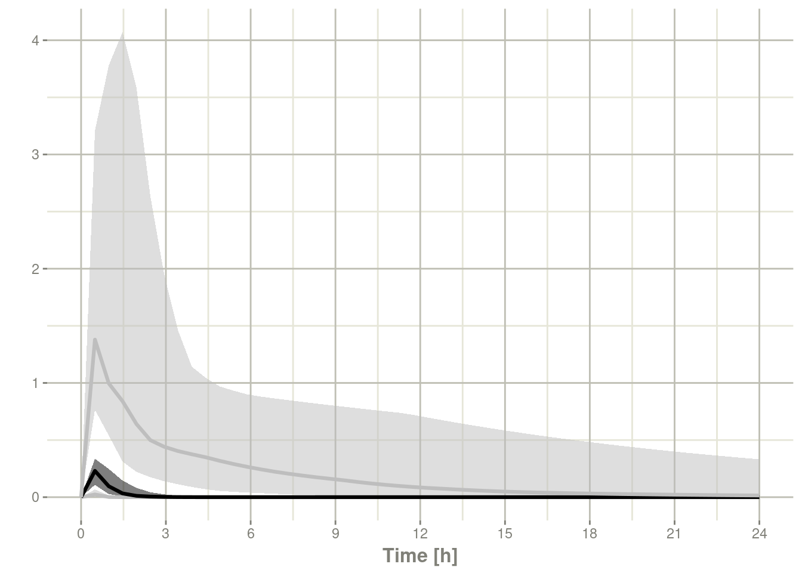

Chapter 13 Advanced & Miscellaneous Topics
This covers advanced or miscellaneous topics in RxODE
13.1 Using RxODE with a pipeline
13.1.1 Setting up the RxODE model for the pipeline
In this example we will show how to use RxODE in a simple pipeline.
We can start with a model that can be used for the different simulation workflows that RxODE can handle:
library(RxODE)
Ribba2012 <- RxODE({
k = 100
tkde = 0.24
eta.tkde = 0
kde ~ tkde*exp(eta.tkde)
tkpq = 0.0295
eta.kpq = 0
kpq ~ tkpq * exp(eta.kpq)
tkqpp = 0.0031
eta.kqpp = 0
kqpp ~ tkqpp * exp(eta.kqpp)
tlambdap = 0.121
eta.lambdap = 0
lambdap ~ tlambdap*exp(eta.lambdap)
tgamma = 0.729
eta.gamma = 0
gamma ~ tgamma*exp(eta.gamma)
tdeltaqp = 0.00867
eta.deltaqp = 0
deltaqp ~ tdeltaqp*exp(eta.deltaqp)
prop.err <- 0
pstar <- (pt+q+qp)*(1+prop.err)
d/dt(c) = -kde * c
d/dt(pt) = lambdap * pt *(1-pstar/k) + kqpp*qp -
kpq*pt - gamma*c*kde*pt
d/dt(q) = kpq*pt -gamma*c*kde*q
d/dt(qp) = gamma*c*kde*q - kqpp*qp - deltaqp*qp
#### initial conditions
tpt0 = 7.13
eta.pt0 = 0
pt0 ~ tpt0*exp(eta.pt0)
tq0 = 41.2
eta.q0 = 0
q0 ~ tq0*exp(eta.q0)
pt(0) = pt0
q(0) = q0
})This is a tumor growth model described in Ribba 2012. In this case, we
compiled the model into an R object Ribba2012, though in an RxODE
simulation pipeline, you do not have to assign the compiled model to
any object, though I think it makes sense.
13.1.2 Simulating one event table
Simulating a single event table is quite simple:
- You pipe the RxODE simulation object into an event table object by
et().
- When the events are completely specified, you simply solve the ODE system with
rxSolve(). - In this case you can pipe the output to
plot()to conveniently view the results. - Note for the plot we are only selecting the selecting following:
pt(Proliferative Tissue),q(quiescent tissue)qp(DNA-Damaged quiescent tissue) andpstar(total tumor tissue)
Ribba2012 %>% # Use RxODE
et(time.units="months") %>% # Pipe to a new event table
et(amt=1, time=50, until=58, ii=1.5) %>% # Add dosing every 1.5 months
et(0, 250, by=0.5) %>% # Add some sampling times (not required)
rxSolve() %>% # Solve the simulation
plot(pt, q, qp, pstar) # Plot it, plotting the variables of interest
13.1.3 Simulating multiple subjects from a single event table
13.1.3.1 Simulating with between subject variability
The next sort of simulation that may be useful is simulating multiple
patients with the same treatments. In this case, we will use the
omega matrix specified by the paper:
#### Add CVs from paper for individual simulation
#### Uses exact formula:
lognCv = function(x){log((x/100)^2+1)}
library(lotri)
#### Now create omega matrix
#### I'm using lotri to quickly specify names/diagonals
omega <- lotri(eta.pt0 ~ lognCv(94),
eta.q0 ~ lognCv(54),
eta.lambdap ~ lognCv(72),
eta.kqp ~ lognCv(76),
eta.qpp ~ lognCv(97),
eta.deltaqp ~ lognCv(115),
eta.kde ~ lognCv(70))
omega#> eta.pt0 eta.q0 eta.lambdap eta.kqp eta.qpp eta.deltaqp
#> eta.pt0 0.6331848 0.0000000 0.0000000 0.0000000 0.0000000 0.0000000
#> eta.q0 0.0000000 0.2558818 0.0000000 0.0000000 0.0000000 0.0000000
#> eta.lambdap 0.0000000 0.0000000 0.4176571 0.0000000 0.0000000 0.0000000
#> eta.kqp 0.0000000 0.0000000 0.0000000 0.4559047 0.0000000 0.0000000
#> eta.qpp 0.0000000 0.0000000 0.0000000 0.0000000 0.6631518 0.0000000
#> eta.deltaqp 0.0000000 0.0000000 0.0000000 0.0000000 0.0000000 0.8426442
#> eta.kde 0.0000000 0.0000000 0.0000000 0.0000000 0.0000000 0.0000000
#> eta.kde
#> eta.pt0 0.0000000
#> eta.q0 0.0000000
#> eta.lambdap 0.0000000
#> eta.kqp 0.0000000
#> eta.qpp 0.0000000
#> eta.deltaqp 0.0000000
#> eta.kde 0.3987761With this information, it is easy to simulate 3 subjects from the model-based parameters:
set.seed(1089)
Ribba2012 %>% # Use RxODE
et(time.units="months") %>% # Pipe to a new event table
et(amt=1, time=50, until=58, ii=1.5) %>% # Add dosing every 1.5 months
et(0, 250, by=0.5) %>% # Add some sampling times (not required)
rxSolve(nSub=3, omega=omega) %>% # Solve the simulation
plot(pt, q, qp, pstar) # Plot it, plotting the variables of interestNote there are two different things that were added to this simulation:
- nSub to specify how many subjects are in the model
- omega to specify the between subject variability.
13.1.3.2 Simulation with unexplained variability
You can even add unexplained variability quite easily:
Ribba2012 %>% # Use RxODE
et(time.units="months") %>% # Pipe to a new event table
et(amt=1, time=50, until=58, ii=1.5) %>% # Add dosing every 1.5 months
et(0, 250, by=0.5) %>% # Add some sampling times (not required)
rxSolve(nSub=3, omega=omega, sigma=lotri(prop.err ~ 0.05^2)) %>% # Solve the simulation
plot(pt, q, qp, pstar) # Plot it, plotting the variables of interest
In this case we only added the sigma matrix to have unexplained
variability on the pstar or total tumor tissue.
You can even simulate with uncertainty in the theta omega and sigma values if you wish.
13.1.3.3 Simulation with uncertainty in all the parameters (by matrices)
If we assume these parameters came from 95 subjects with 8
observations apiece, the degrees of freedom for the omega matrix would
be 95, and the degrees of freedom of the sigma matrix would be
95*8=760 because 95 items informed the omega matrix, and 760
items informed the sigma matrix.
Ribba2012 %>% # Use RxODE
et(time.units="months") %>% # Pipe to a new event table
et(amt=1, time=50, until=58, ii=1.5) %>% # Add dosing every 1.5 months
et(0, 250, by=0.5) %>% # Add some sampling times (not required)
rxSolve(nSub=3, nStud=3, omega=omega, sigma=lotri(prop.err ~ 0.05^2),
dfSub=760, dfObs=95) %>% # Solve the simulation
plot(pt, q, qp, pstar) # Plot it, plotting the variables of interest
Often in simulations we have a full covariance matrix for the fixed
effect parameters. In this case, we do not have the matrix, but it
could be specified by thetaMat.
While we do not have a full covariance matrix, we can have information about the diagonal elements of the covariance matrix from the model paper. These can be converted as follows:
rseVar <- function(est, rse){
return(est*rse/100)^2
}
thetaMat <- lotri(tpt0 ~ rseVar(7.13,25),
tq0 ~ rseVar(41.2,7),
tlambdap ~ rseVar(0.121, 16),
tkqpp ~ rseVar(0.0031, 35),
tdeltaqp ~ rseVar(0.00867, 21),
tgamma ~ rseVar(0.729, 37),
tkde ~ rseVar(0.24, 33)
);
thetaMat#> tpt0 tq0 tlambdap tkqpp tdeltaqp tgamma tkde
#> tpt0 1.7825 0.000 0.00000 0.000000 0.0000000 0.00000 0.0000
#> tq0 0.0000 2.884 0.00000 0.000000 0.0000000 0.00000 0.0000
#> tlambdap 0.0000 0.000 0.01936 0.000000 0.0000000 0.00000 0.0000
#> tkqpp 0.0000 0.000 0.00000 0.001085 0.0000000 0.00000 0.0000
#> tdeltaqp 0.0000 0.000 0.00000 0.000000 0.0018207 0.00000 0.0000
#> tgamma 0.0000 0.000 0.00000 0.000000 0.0000000 0.26973 0.0000
#> tkde 0.0000 0.000 0.00000 0.000000 0.0000000 0.00000 0.0792Now we have a thetaMat to represent the uncertainty in the theta
matrix, as well as the other pieces in the simulation. Typically you
can put this information into your simulation with the thetaMat
matrix.
With such large variability in theta it is easy to sample a negative
rate constant, which does not make sense. For example:
Ribba2012 %>% # Use RxODE
et(time.units="months") %>% # Pipe to a new event table
et(amt=1, time=50, until=58, ii=1.5) %>% # Add dosing every 1.5 months
et(0, 250, by=0.5) %>% # Add some sampling times (not required)
rxSolve(nSub=2, nStud=2, omega=omega, sigma=lotri(prop.err ~ 0.05^2),
thetaMat=thetaMat,
dfSub=760, dfObs=95) %>% # Solve the simulation
plot(pt, q, qp, pstar) # Plot it, plotting the variables of interest
#> unhandled error message: EE:[lsoda] 70000 steps taken before reaching tout
#> @(lsoda.c:750
#> Warning message:
#> In rxSolve_(object, .ctl, .nms, .xtra, params, events, inits, setupOnly = .setupOnly) :
#> Some ID(s) could not solve the ODEs correctly; These values are replaced with NA.To correct these problems you simply need to use a truncated
multivariate normal and specify the reasonable ranges for the
parameters. For theta this is specified by thetaLower and
thetaUpper. Similar parameters are there for the other matrices:
omegaLower, omegaUpper, sigmaLower and sigmaUpper. These may
be named vectors, one numeric value, or a numeric vector matching the
number of parameters specified in the thetaMat matrix.
In this case the simulation simply has to be modified to have
thetaLower=0 to make sure all rates are positive:
Ribba2012 %>% # Use RxODE
et(time.units="months") %>% # Pipe to a new event table
et(amt=1, time=50, until=58, ii=1.5) %>% # Add dosing every 1.5 months
et(0, 250, by=0.5) %>% # Add some sampling times (not required)
rxSolve(nSub=2, nStud=2, omega=omega, sigma=lotri(prop.err ~ 0.05^2),
thetaMat=thetaMat,
thetaLower=0, # Make sure the rates are reasonable
dfSub=760, dfObs=95) %>% # Solve the simulation
plot(pt, q, qp, pstar) # Plot it, plotting the variables of interest
13.1.4 Summarizing the simulation output
While it is easy to use dplyr and data.table to perform your own
summary of simulations, RxODE also provides this ability by the
confint function.
#### This takes a little more time; Most of the time is the summary
#### time.
sim0 <- Ribba2012 %>% # Use RxODE
et(time.units="months") %>% # Pipe to a new event table
et(amt=1, time=50, until=58, ii=1.5) %>% # Add dosing every 1.5 months
et(0, 250, by=0.5) %>% # Add some sampling times (not required)
rxSolve(nSub=10, nStud=10, omega=omega, sigma=lotri(prop.err ~ 0.05^2),
thetaMat=thetaMat,
thetaLower=0, # Make sure the rates are reasonable
dfSub=760, dfObs=95) %>% # Solve the simulation
confint(c("pt","q","qp","pstar"),level=0.90); # Create Simulation intervals#> summarizing data...donesim0 %>% plot() # Plot the simulation intervals
13.1.4.1 Simulating from a data-frame of parameters
While the simulation from matrices can be very useful and a fast way
to simulate information, sometimes you may want to simulate more
complex scenarios. For instance, there may be some reason to believe
that tkde needs to be above tlambdap, therefore these need to be
simulated more carefully. You can generate the data frame in whatever
way you want. The internal method of simulating the new parameters is
exported too.
library(dplyr)
pars <- rxInits(Ribba2012);
pars <- pars[regexpr("(prop|eta)",names(pars)) == -1]
print(pars)#> k tkde tkpq tkqpp tlambdap tgamma tdeltaqp tpt0
#> 1.00e+02 2.40e-01 2.95e-02 3.10e-03 1.21e-01 7.29e-01 8.67e-03 7.13e+00
#> tq0
#> 4.12e+01#### This is the exported method for simulation of Theta/Omega internally in RxODE
df <- rxSimThetaOmega(params=pars, omega=omega,dfSub=760,
thetaMat=thetaMat, thetaLower=0, nSub=60,nStud=60) %>%
filter(tkde > tlambdap) %>% as.tbl()
#### You could also simulate more and bind them together to a data frame.
print(df)#> # A tibble: 2,340 x 16
#> k tkde tkpq tkqpp tlambdap tgamma tdeltaqp tpt0 tq0 eta.pt0 eta.q0
#> <dbl> <dbl> <dbl> <dbl> <dbl> <dbl> <dbl> <dbl> <dbl> <dbl> <dbl>
#> 1 100 2.83 0.0295 0.239 0.683 0.861 1.25 7.67 42.0 0.559 0.136
#> 2 100 2.83 0.0295 0.239 0.683 0.861 1.25 7.67 42.0 0.0465 -0.581
#> 3 100 2.83 0.0295 0.239 0.683 0.861 1.25 7.67 42.0 -0.188 -0.180
#> 4 100 2.83 0.0295 0.239 0.683 0.861 1.25 7.67 42.0 0.321 0.614
#> 5 100 2.83 0.0295 0.239 0.683 0.861 1.25 7.67 42.0 0.0656 -0.232
#> 6 100 2.83 0.0295 0.239 0.683 0.861 1.25 7.67 42.0 0.0194 0.517
#> 7 100 2.83 0.0295 0.239 0.683 0.861 1.25 7.67 42.0 -0.218 0.260
#> 8 100 2.83 0.0295 0.239 0.683 0.861 1.25 7.67 42.0 -0.258 -0.761
#> 9 100 2.83 0.0295 0.239 0.683 0.861 1.25 7.67 42.0 -1.28 -1.34
#> 10 100 2.83 0.0295 0.239 0.683 0.861 1.25 7.67 42.0 -0.495 0.161
#> # ... with 2,330 more rows, and 5 more variables: eta.lambdap <dbl>,
#> # eta.kqp <dbl>, eta.qpp <dbl>, eta.deltaqp <dbl>, eta.kde <dbl>#### Quick check to make sure that all the parameters are OK.
all(df$tkde>df$tlambdap)#> [1] TRUEsim1 <- Ribba2012 %>% # Use RxODE
et(time.units="months") %>% # Pipe to a new event table
et(amt=1, time=50, until=58, ii=1.5) %>% # Add dosing every 1.5 months
et(0, 250, by=0.5) %>% # Add some sampling times (not required)
rxSolve(df)
#### Note this information looses information about which ID is in a
#### "study", so it summarizes the confidence intervals by dividing the
#### subjects into sqrt(#subjects) subjects and then summarizes the
#### confidence intervals
sim2 <- sim1 %>% confint(c("pt","q","qp","pstar"),level=0.90); # Create Simulation intervals#> ! in order to put confidence bands around the intervals, you need at least 2500 simulations#> summarizing data...donesave(sim2, file = file.path(system.file(package = "RxODE"), "pipeline-sim2.rds"), version = 2)
sim2 %>% plot()13.2 Speeding up RxODE
13.2.1 Increasing RxODE speed by multi-subject parallel solving
RxODE originally developed as an ODE solver that allowed an ODE
solve for a single subject. This flexibility is still supported.
The original code from the RxODE tutorial is below:
library(RxODE)
library(microbenchmark)
library(ggplot2)
mod1 <- RxODE({
C2 = centr/V2;
C3 = peri/V3;
d/dt(depot) = -KA*depot;
d/dt(centr) = KA*depot - CL*C2 - Q*C2 + Q*C3;
d/dt(peri) = Q*C2 - Q*C3;
d/dt(eff) = Kin - Kout*(1-C2/(EC50+C2))*eff;
eff(0) = 1
})
#### Create an event table
ev <- et() %>%
et(amt=10000, addl=9,ii=12) %>%
et(time=120, amt=20000, addl=4, ii=24) %>%
et(0:240) ## Add Sampling
nsub <- 100 # 100 sub-problems
sigma <- matrix(c(0.09,0.08,0.08,0.25),2,2) # IIV covariance matrix
mv <- rxRmvn(n=nsub, rep(0,2), sigma) # Sample from covariance matrix
CL <- 7*exp(mv[,1])
V2 <- 40*exp(mv[,2])
params.all <- cbind(KA=0.3, CL=CL, V2=V2, Q=10, V3=300,
Kin=0.2, Kout=0.2, EC50=8)13.2.1.1 For Loop
The slowest way to code this is to use a for loop. In this example
we will enclose it in a function to compare timing.
runFor <- function(){
res <- NULL
for (i in 1:nsub) {
params <- params.all[i,]
x <- mod1$solve(params, ev, cacheEvent=FALSE)
##Store results for effect compartment
res <- cbind(res, x[, "eff"])
}
return(res)
}13.2.1.2 Running with apply
In general for R, the apply types of functions perform better than a
for loop, so the tutorial also suggests this speed enhancement
runSapply <- function(){
res <- apply(params.all, 1, function(theta)
mod1$run(theta, ev, cacheEvent=FALSE)[, "eff"])
}13.2.1.3 Run using a single-threaded solve
You can also have RxODE solve all the subject simultaneously without collecting the results in R, using a single threaded solve.
The data output is slightly different here, but still gives the same information:
runSingleThread <- function(){
solve(mod1, params.all, ev, cores=1, cacheEvent=FALSE)[,c("sim.id", "time", "eff")]
}13.2.1.4 Run a 2 threaded solve
RxODE supports multi-threaded solves, so another option is to have 2
threads (called cores in the solve options, you can see the options
in rxControl() or rxSolve()).
run2Thread <- function(){
solve(mod1, params.all, ev, cores=2, cacheEvent=FALSE)[,c("sim.id", "time", "eff")]
}13.2.1.5 Compare the times between all the methods
Now the moment of truth, the timings:
bench <- microbenchmark(runFor(), runSapply(), runSingleThread(),run2Thread())
print(bench)#> Unit: milliseconds
#> expr min lq mean median uq max
#> runFor() 151.77118 156.10263 300.07767 162.15716 191.19005 5040.0636
#> runSapply() 150.58311 154.19773 253.58199 160.11412 203.09467 2483.5914
#> runSingleThread() 21.74633 22.65355 36.60574 22.96056 27.29271 937.1018
#> run2Thread() 12.90999 13.28047 34.20562 13.79505 16.47374 445.8067
#> neval
#> 100
#> 100
#> 100
#> 100autoplot(bench)#> Coordinate system already present. Adding new coordinate system, which will replace the existing one.
It is clear that the largest jump in performance when using the
solve method and providing all the parameters to RxODE to solve
without looping over each subject with either a for or a sapply.
The number of cores/threads applied to the solve also plays a role in
the solving.
We can explore the number of threads further with the following code:
runThread <- function(n){
solve(mod1, params.all, ev, cores=n, cacheEvent=FALSE)[,c("sim.id", "time", "eff")]
}
bench <- eval(parse(text=sprintf("microbenchmark(%s)",
paste(paste0("runThread(", seq(1, 2 * rxCores()),")"),
collapse=","))))
print(bench)#> Unit: milliseconds
#> expr min lq mean median uq max neval
#> runThread(1) 21.665401 22.84931 32.07667 25.55398 26.73263 423.8633 100
#> runThread(2) 13.010153 13.51561 68.86487 14.23144 28.11354 501.4258 100
#> runThread(3) 9.833865 10.60249 73.33366 18.80608 25.65790 560.9963 100
#> runThread(4) 13.616611 15.17035 70.64460 15.94403 28.08158 478.3749 100
#> runThread(5) 11.937032 13.29130 62.55993 14.10015 116.26013 515.4174 100
#> runThread(6) 10.756661 12.20116 57.89893 12.64980 138.86743 229.5226 100
#> runThread(7) 10.398797 11.25674 79.99754 122.38269 134.86005 328.1843 100
#> runThread(8) 18.165691 41.26978 105.01751 112.17879 125.15954 652.7021 100autoplot(bench)#> Coordinate system already present. Adding new coordinate system, which will replace the existing one.There can be a suite spot in speed vs number or cores. The system type (mac, linux, windows and/or processor), complexity of the ODE solving and the number of subjects may affect this arbitrary number of threads. 4 threads is a good number to use without any prior knowledge because most systems these days have at least 4 threads (or 2 processors with 4 threads).
13.2.2 A real life example
Before some of the parallel solving was implemented, the fastest way
to run RxODE was with lapply. This is how Rik Schoemaker created
the data-set for nlmixr comparisons, but reduced to run faster
automatic building of the pkgdown website.
library(RxODE)
library(data.table)#>
#> Attaching package: 'data.table'#> The following objects are masked from 'package:dplyr':
#>
#> between, first, last#Define the RxODE model
ode1 <- "
d/dt(abs) = -KA*abs;
d/dt(centr) = KA*abs-(CL/V)*centr;
C2=centr/V;
"
#Create the RxODE simulation object
mod1 <- RxODE(model = ode1)
#Population parameter values on log-scale
paramsl <- c(CL = log(4),
V = log(70),
KA = log(1))
#make 10,000 subjects to sample from:
nsubg <- 300 # subjects per dose
doses <- c(10, 30, 60, 120)
nsub <- nsubg * length(doses)
#IIV of 30% for each parameter
omega <- diag(c(0.09, 0.09, 0.09))# IIV covariance matrix
sigma <- 0.2
#Sample from the multivariate normal
set.seed(98176247)
library(MASS)#>
#> Attaching package: 'MASS'#> The following object is masked from 'package:dplyr':
#>
#> select#> The following object is masked from 'package:patchwork':
#>
#> area mv <-
mvrnorm(nsub, rep(0, dim(omega)[1]), omega) # Sample from covariance matrix
#Combine population parameters with IIV
params.all <-
data.table(
"ID" = seq(1:nsub),
"CL" = exp(paramsl['CL'] + mv[, 1]),
"V" = exp(paramsl['V'] + mv[, 2]),
"KA" = exp(paramsl['KA'] + mv[, 3])
)
#set the doses (looping through the 4 doses)
params.all[, AMT := rep(100 * doses,nsubg)]
Startlapply <- Sys.time()
#Run the simulations using lapply for speed
s = lapply(1:nsub, function(i) {
#selects the parameters associated with the subject to be simulated
params <- params.all[i]
#creates an eventTable with 7 doses every 24 hours
ev <- eventTable()
ev$add.dosing(
dose = params$AMT,
nbr.doses = 1,
dosing.to = 1,
rate = NULL,
start.time = 0
)
#generates 4 random samples in a 24 hour period
ev$add.sampling(c(0, sort(round(sample(runif(600, 0, 1440), 4) / 60, 2))))
#runs the RxODE simulation
x <- as.data.table(mod1$run(params, ev))
#merges the parameters and ID number to the simulation output
x[, names(params) := params]
})
#runs the entire sequence of 100 subjects and binds the results to the object res
res = as.data.table(do.call("rbind", s))
Stoplapply <- Sys.time()
print(Stoplapply - Startlapply)#> Time difference of 5.82626 secsBy applying some of the new parallel solving concepts you can simply run the same simulation both with less code and faster:
rx <- RxODE({
CL = log(4)
V = log(70)
KA = log(1)
CL = exp(CL + eta.CL)
V = exp(V + eta.V)
KA = exp(KA + eta.KA)
d/dt(abs) = -KA*abs;
d/dt(centr) = KA*abs-(CL/V)*centr;
C2=centr/V;
})
omega <- lotri(eta.CL ~ 0.09,
eta.V ~ 0.09,
eta.KA ~ 0.09)
doses <- c(10, 30, 60, 120)
startParallel <- Sys.time()
ev <- do.call("rbind",
lapply(seq_along(doses), function(i){
et() %>%
et(amt=doses[i]) %>% # Add single dose
et(0) %>% # Add 0 observation
#### Generate 4 samples in 24 hour period
et(lapply(1:4, function(...){c(0, 24)})) %>%
et(id=seq(1, nsubg) + (i - 1) * nsubg) %>%
#### Convert to data frame to skip sorting the data
#### When binding the data together
as.data.frame
}))
#### To better compare, use the same output, that is data.table
res <- rxSolve(rx, ev, omega=omega, returnType="data.table")
endParallel <- Sys.time()
print(endParallel - startParallel)#> Time difference of 0.5279143 secsYou can see a striking time difference between the two methods; A few things to keep in mind:
RxODEuse the thread-safe sitmothreefryroutines for simulation ofetavalues. Therefore the results are expected to be different (also the random samples are taken in a different order which would be different)This prior simulation was run in R 3.5, which has a different random number generator so the results in this simulation will be different from the actual nlmixr comparison when using the slower simulation.
This speed comparison used
data.table.RxODEusesdata.tableinternally (when available) try to speed up sorting, so this would be different than installations wheredata.tableis not installed. You can force RxODE to useorder()when sorting by usingforderForceBase(TRUE). In this case there is little difference between the two, though in other examplesdata.table’s presence leads to a speed increase (and less likely it could lead to a slowdown).
13.2.2.1 Want more ways to run multi-subject simulations
The version since the tutorial has even more ways to run multi-subject
simulations, including adding variability in sampling and dosing times
with et() (see RxODE
events
for more information), ability to supply both an omega and sigma
matrix as well as adding as a thetaMat to R to simulate with
uncertainty in the omega, sigma and theta matrices; see RxODE
simulation
vignette.
13.3 Integrating RxODE models in your package
13.3.1 Using Pre-compiled models in your packages
If you have a package and would like to include pre-compiled RxODE
models in your package it is easy to create the package. You simple
make the package with the rxPkg() command.
library(RxODE);
#### Now Create a model
idr <- RxODE({
C2 = centr/V2;
C3 = peri/V3;
d/dt(depot) =-KA*depot;
d/dt(centr) = KA*depot - CL*C2 - Q*C2 + Q*C3;
d/dt(peri) = Q*C2 - Q*C3;
d/dt(eff) = Kin - Kout*(1-C2/(EC50+C2))*eff;
})
#### You can specify as many models as you want to add
rxPkg(idr, package="myPackage"); ## Add the idr model to your packageThis will:
Add the model to your package; You can use the package data as
idronce the package loadsAdd the right package requirements to the DESCRIPTION file. You will want to update this to describe the package and modify authors, license etc.
Create skeleton model documentation files you can add to for your package documentation. In this case it would be the file
idr-doc.Rin yourRdirectoryCreate a
configureandconfigure.winscript that removes and regenerates thesrcdirectory based on whatever version ofRxODEthis is compiled against. This should be modified if you plan to have your own compiled code, though this is not suggested.You can write your own R code in your package that interacts with the RxODE object so you can distribute shiny apps and similar things in the package context.
Once this is present you can add more models to your package by
rxUse(). Simply compile the RxODE model in your package then add
the model with rxUse()
rxUse(model)Now both model and idr are in the model library. This will also
create model-doc.R in your R directory so you can document this
model.
You can then use devtools methods to install/test your model
devtools::load_all() # Load all the functions in the package
devtools::document() # Create package documentation
devtools::install() # Install package
devtools::check() # Check the package
devtools::build() # build the package so you can submit it to places like CRAN13.3.2 Using Models in a already present package
To illustrate, lets start with a blank package
library(RxODE)
library(usethis)
pkgPath <- file.path(rxTempDir(),"MyRxModel")
create_package(pkgPath);
use_gpl3_license("Matt")
use_package("RxODE", "LinkingTo")
use_package("RxODE", "Depends") ## library(RxODE) on load; Can use imports instead.
use_roxygen_md()
##use_readme_md()
library(RxODE);
#### Now Create a model
idr <- RxODE({
C2 = centr/V2;
C3 = peri/V3;
d/dt(depot) =-KA*depot;
d/dt(centr) = KA*depot - CL*C2 - Q*C2 + Q*C3;
d/dt(peri) = Q*C2 - Q*C3;
d/dt(eff) = Kin - Kout*(1-C2/(EC50+C2))*eff;
});
rxUse(idr); ## Add the idr model to your package
rxUse(); # Update the compiled RxODE sources for all of your packages
The rxUse() will:
- Create RxODE sources and move them into the package’s src/
directory. If there is only R source in the package, it will also
finish off the directory with an library-init.c which registers
all the RxODE models in the package for use in R.
- Create stub R documentation for each of the models your are
including in your package. You will be able to see the R
documentation when loading your package by the standard ? interface.
You will still need to:
- Export at least one function. If you do not have a function that
you wish to export, you can add a re-export of RxODE using roxygen
as follows:
##' @importFrom RxODE RxODE
##' @export
RxODE::RxODEIf you want to use Suggests instead of Depends in your package,
you way want to export all of RxODE’s normal routines
##' @importFrom RxODE RxODE
##' @export
RxODE::RxODE
##' @importFrom RxODE et
##' @export
RxODE::et
##' @importFrom RxODE etRep
##' @export
RxODE::etRep
##' @importFrom RxODE etSeq
##' @export
RxODE::etSeq
##' @importFrom RxODE as.et
##' @export
RxODE::as.et
##' @importFrom RxODE eventTable
##' @export
RxODE::eventTable
##' @importFrom RxODE add.dosing
##' @export
RxODE::add.dosing
##' @importFrom RxODE add.sampling
##' @export
RxODE::add.sampling
##' @importFrom RxODE rxSolve
##' @export
RxODE::rxSolve
##' @importFrom RxODE rxControl
##' @export
RxODE::rxControl
##' @importFrom RxODE rxClean
##' @export
RxODE::rxClean
##' @importFrom RxODE rxUse
##' @export
RxODE::rxUse
##' @importFrom RxODE rxShiny
##' @export
RxODE::rxShiny
##' @importFrom RxODE genShinyApp.template
##' @export
RxODE::genShinyApp.template
##' @importFrom RxODE cvPost
##' @export
RxODE::cvPost
### This is actually from `magrittr` but allows less imports
##' @importFrom RxODE %>%
##' @export
RxODE::`%>%`- You also need to instruct R to load the model library models included in the model’s dll. This is done by:
### In this case `rxModels` is the package name
##' @useDynLib rxModels, .registration=TRUEIf this is a R package with RxODE models and you do not intend to add any other compiled sources (recommended), you can add the following configure scripts
#!/bin/sh
### This should be used for both configure and configure.win
echo "unlink('src', recursive=TRUE);RxODE::rxUse()" > build.R
${R_HOME}/bin/Rscript build.R
rm build.RDepending on the check you may need a dummy autoconf script,
#### dummy autoconf script
#### It is saved to configure.acIf you want to integrate with other sources in your Rcpp or
C/Fortan based packages, you need to include rxModels-compiled.h and:
- Add the define macro compiledModelCall to the list of registered
.Call functions.
- Register C interface to allow model solving by
R_init0_rxModels_RxODE_models() (again rxModels would be
replaced by your package name).
Once this is complete, you can compile/document by the standard methods:
devtools::load_all()
devtools::document()
devtools::install()If you load the package with a new version of RxODE, the models will be recompiled when they are used.
However, if you want the models recompiled for the most recent version
of RxODE, you simply need to call rxUse() again in the project
directory followed by the standard methods for install/create a
package.
devtools::load_all()
devtools::document()
devtools::install()Note you do not have to include the RxODE code required to
generate the model to regenerate the RxODE c-code in the src
directory. As with all RxODE objects, a summary will show one way to recreate the same model.
An example of compiled models package can be found in the rxModels repository.
13.4 Stiff ODEs with Jacobian Specification
13.4.0.1 Stiff ODEs with Jacobian Specification
Occasionally, you may come across
a
stiff differential equation,
that is a differential equation that is numerically unstable and small
variations in parameters cause different solutions to the ODEs. One
way to tackle this is to choose a stiff-solver, or hybrid stiff solver
(like the default LSODA). Typically this is enough. However exact
Jacobian solutions may increase the stability of the ODE. (Note the
Jacobian is the derivative of the ODE specification with respect to
each variable). In RxODE you can specify the Jacobian with the
df(state)/dy(variable)= statement. A classic ODE that has stiff
properties under various conditions is
the
Van der Pol differential
equations.
In RxODE these can be specified by the following:
library(RxODE)
Vtpol2 <- RxODE({
d/dt(y) = dy
d/dt(dy) = mu*(1-y^2)*dy - y
##### Jacobian
df(y)/dy(dy) = 1
df(dy)/dy(y) = -2*dy*mu*y - 1
df(dy)/dy(dy) = mu*(1-y^2)
##### Initial conditions
y(0) = 2
dy(0) = 0
##### mu
mu = 1 ## nonstiff; 10 moderately stiff; 1000 stiff
})
et <- eventTable();
et$add.sampling(seq(0, 10, length.out=200));
et$add.dosing(20, start.time=0);
s1 <- Vtpol2 %>% solve(et, method="lsoda")
print(s1)#> ______________________________ Solved RxODE object _____________________________
#> -- Parameters ($params): -------------------------------------------------------
#> mu
#> 1
#> -- Initial Conditions ($inits): ------------------------------------------------
#> y dy
#> 2 0
#> -- First part of data (object): ------------------------------------------------
#> # A tibble: 200 x 3
#> time y dy
#> <dbl> <dbl> <dbl>
#> 1 0 22 0
#> 2 0.0503 22.0 -0.0456
#> 3 0.101 22.0 -0.0456
#> 4 0.151 22.0 -0.0456
#> 5 0.201 22.0 -0.0456
#> 6 0.251 22.0 -0.0456
#> # ... with 194 more rows
#> ________________________________________________________________________________While this is not stiff at mu=1, mu=1000 is a stiff system
s2 <- Vtpol2 %>% solve(c(mu=1000), et)
print(s2)#> ______________________________ Solved RxODE object _____________________________
#> -- Parameters ($params): -------------------------------------------------------
#> mu
#> 1000
#> -- Initial Conditions ($inits): ------------------------------------------------
#> y dy
#> 2 0
#> -- First part of data (object): ------------------------------------------------
#> # A tibble: 200 x 3
#> time y dy
#> <dbl> <dbl> <dbl>
#> 1 0 22 0
#> 2 0.0503 22.0 -0.0000455
#> 3 0.101 22.0 -0.0000455
#> 4 0.151 22.0 -0.0000455
#> 5 0.201 22.0 -0.0000455
#> 6 0.251 22.0 -0.0000455
#> # ... with 194 more rows
#> ________________________________________________________________________________While this is easy enough to do, it is a bit tedious. If you have RxODE setup appropriately, that is you have:
- Python installed in your system
- sympy installed in your system
- SnakeCharmR installed in R
You can use the computer algebra system sympy to calculate the Jacobian automatically.
This is done by the RxODE option calcJac option:
Vtpol <- RxODE({
d/dt(y) = dy
d/dt(dy) = mu*(1-y^2)*dy - y
##### Initial conditions
y(0) = 2
dy(0) = 0
##### mu
mu = 1 ## nonstiff; 10 moderately stiff; 1000 stiff
}, calcJac=TRUE)
To see the generated model, you can use rxCat():
> rxCat(Vtpol)
d/dt(y)=dy;
d/dt(dy)=mu*(1-y^2)*dy-y;
y(0)=2;
dy(0)=0;
mu=1;
df(y)/dy(y)=0;
df(dy)/dy(y)=-2*dy*mu*y-1;
df(y)/dy(dy)=1;
df(dy)/dy(dy)=mu*(-Rx_pow_di(y,2)+1);